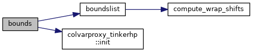
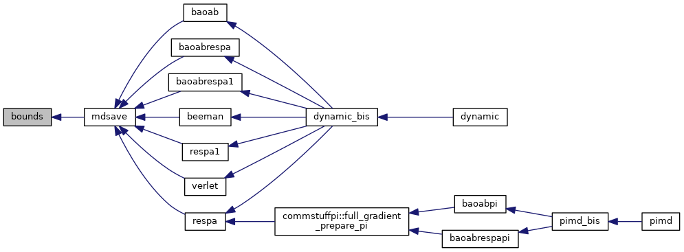
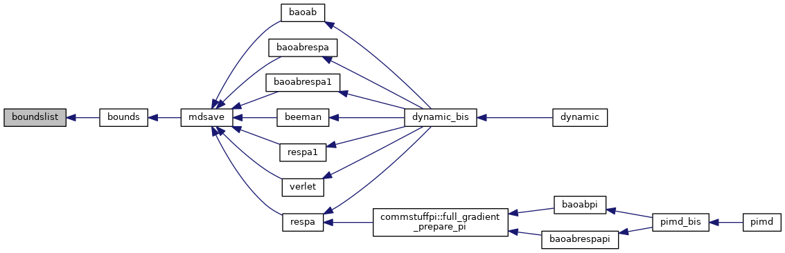
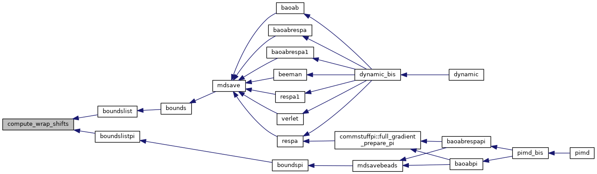

|
Tinker-HP v1.3
|
|
Tinker-HP v1.3
|
Go to the source code of this file.
Functions/Subroutines | |
| subroutine | bounds |
| finds the center of mass of each molecule and translates any stray molecules back into the periodic box atoms involved in a CV (through colvars or plumed) are dealt with separately More... | |
| subroutine | boundslist (nlist, list) |
| computes and displays the total potential energy finds the center of mass of a list of atoms translates any stray atoms back into the periodic box More... | |
| subroutine | compute_wrap_shifts (xmid, ymid, zmid, dx, dy, dz, xshift, yshift, zshift) |
| computes the shifts along each directions based on wrapping More... | |
| subroutine bounds | ( | ) |
finds the center of mass of each molecule and translates any stray molecules back into the periodic box atoms involved in a CV (through colvars or plumed) are dealt with separately
| no | params |
Definition at line 25 of file bounds.f90.
References boundslist(), and colvarproxy_tinkerhp::init().
Referenced by mdsave().


| subroutine boundslist | ( | integer, intent(in) | nlist, |
| integer, dimension(nlist), intent(in) | list | ||
| ) |
computes and displays the total potential energy finds the center of mass of a list of atoms translates any stray atoms back into the periodic box
| no | params |
Definition at line 133 of file bounds.f90.
References compute_wrap_shifts().
Referenced by bounds().

| subroutine compute_wrap_shifts | ( | real*8, intent(in) | xmid, |
| real*8, intent(in) | ymid, | ||
| real*8, intent(in) | zmid, | ||
| real*8, intent(out) | dx, | ||
| real*8, intent(out) | dy, | ||
| real*8, intent(out) | dz, | ||
| integer, intent(out) | xshift, | ||
| integer, intent(out) | yshift, | ||
| integer, intent(out) | zshift | ||
| ) |
computes the shifts along each directions based on wrapping
| no | params |
Definition at line 188 of file bounds.f90.
Referenced by boundslist(), and boundslistpi().

 1.8.5
1.8.5